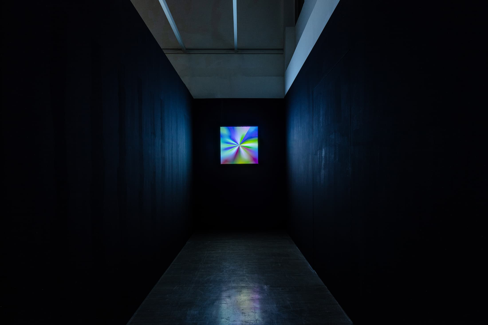
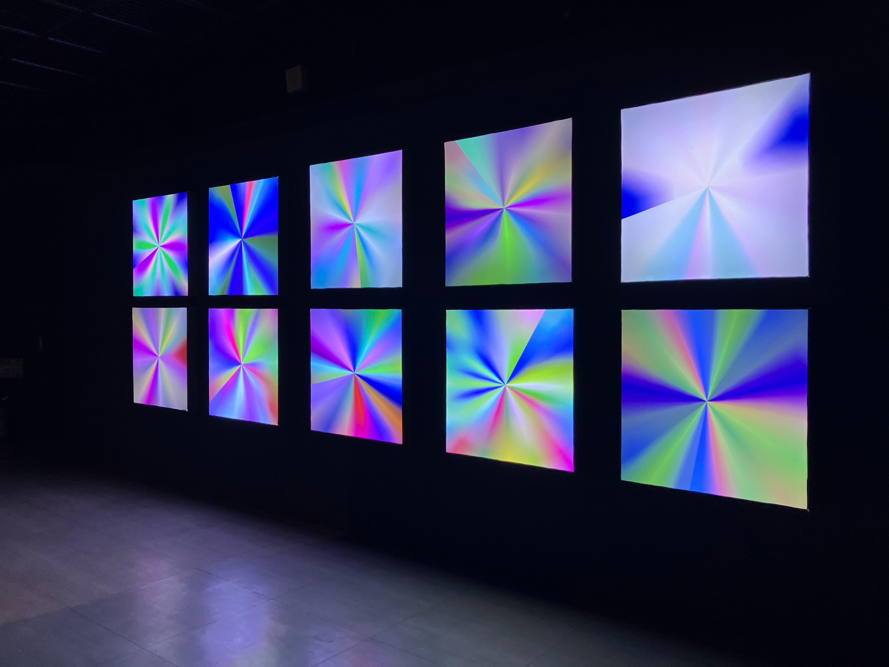
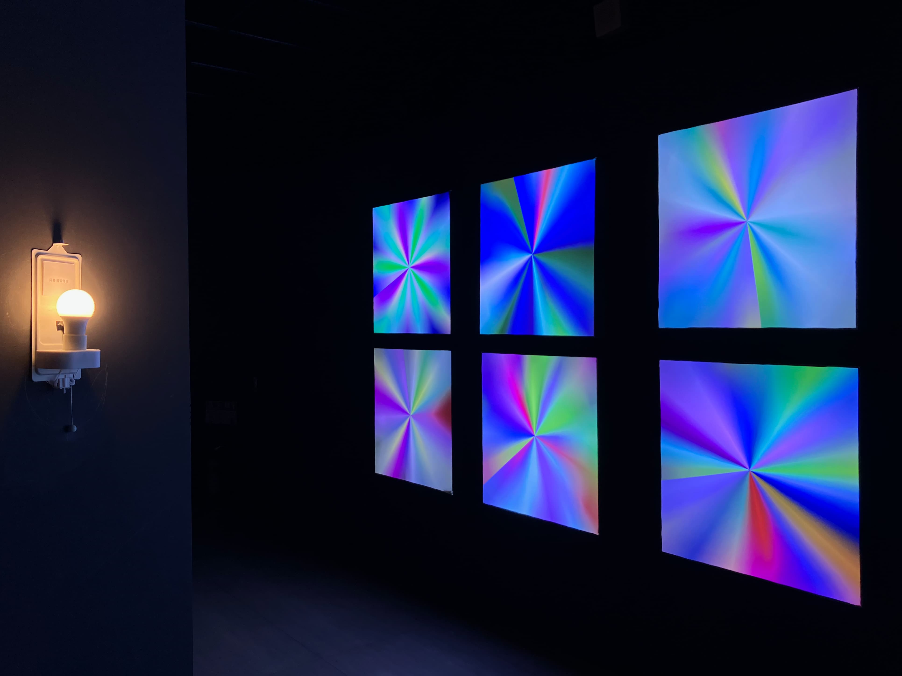
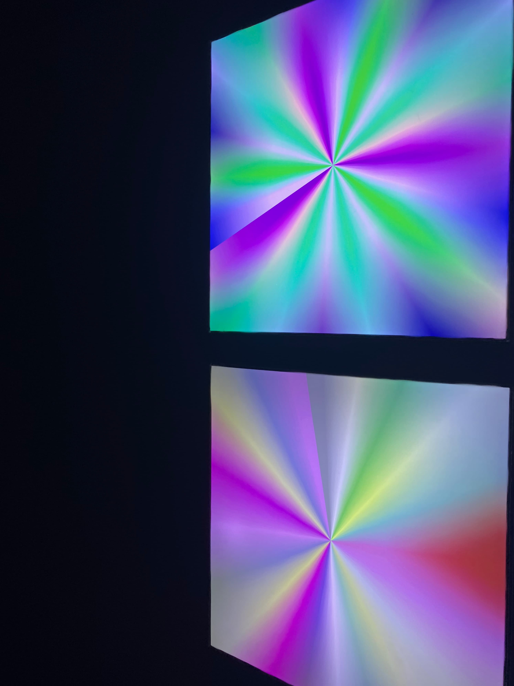

×
Interactive Installation • 2024




Shadow puppetry masterfully utilizes light and shadow behind the screen to accentuate characters at the forefront. Through subtle vocal modulations and masterful storytelling, the puppeteer breathes life into these silhouettes. By calling, shouting, speaking, and singing, a single performer inhabits multiple roles, imbuing every chapter of the story with distinct character and emotional resonance, unveiling the essence of each persona through the power of voice.
The artist shifts the focus onto the puppeteer, observing how they embody various roles and deliver lines through shifts in tone and inflection. Seeking an alternative perspective, the artist explores character identity through the lens of sound. Utilizing custom-developed software—powered by voice analysis and audio recognition technology—the artist analyzes vocal samples from different characters. By extracting and mapping these sonic parameters onto color data, the recorded voices are reimagined as visual spectrums. Through this scientific translation from sound data to chromatic forms, a new series of works is born. Through this creative journey, we observe the interplay of character traits, their voices, and their corresponding colors. By listening intently, we learn to recognize our differences, leading to a deeper understanding and tolerance of diverse qualities, ultimately celebrating the vibrant and multifaceted world we share.